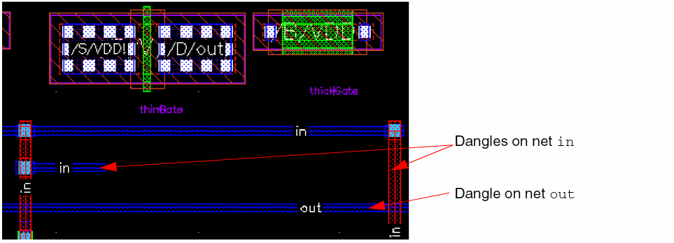
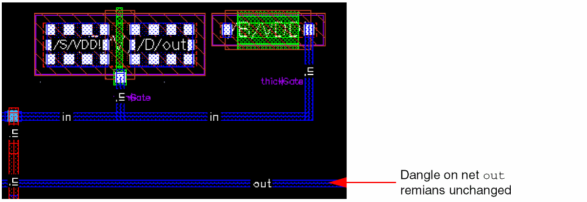
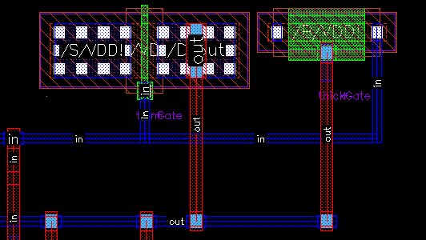
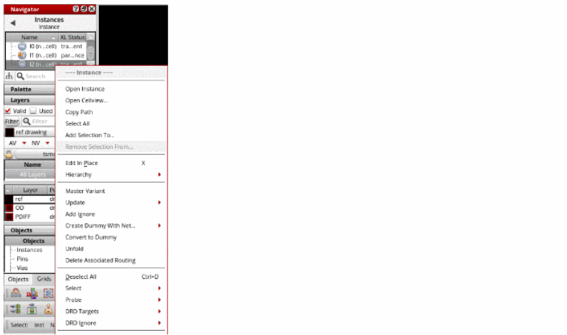
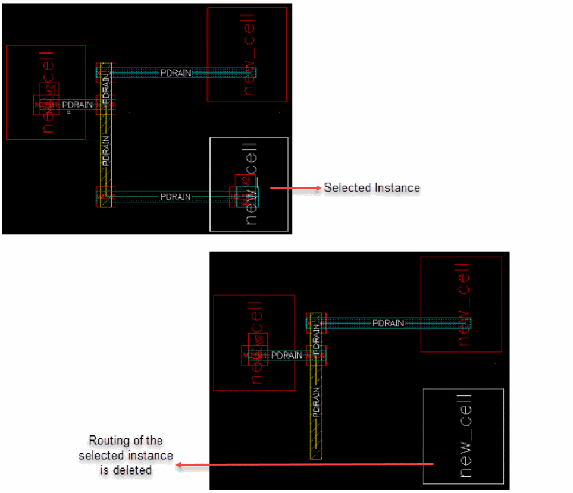
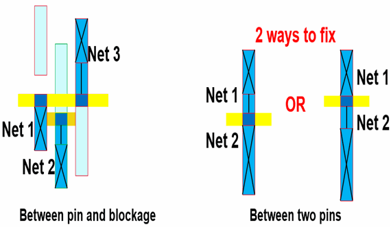
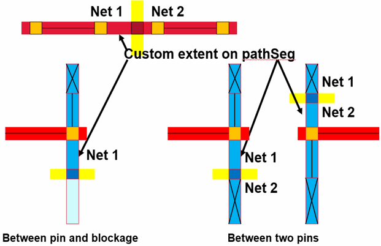
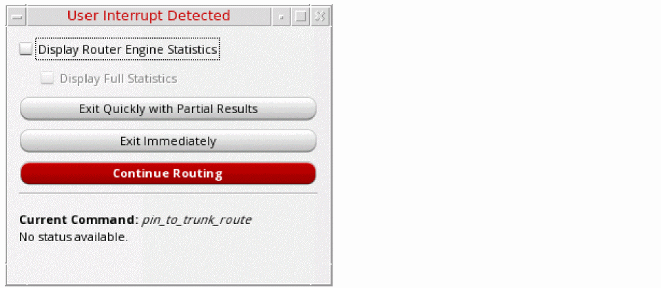
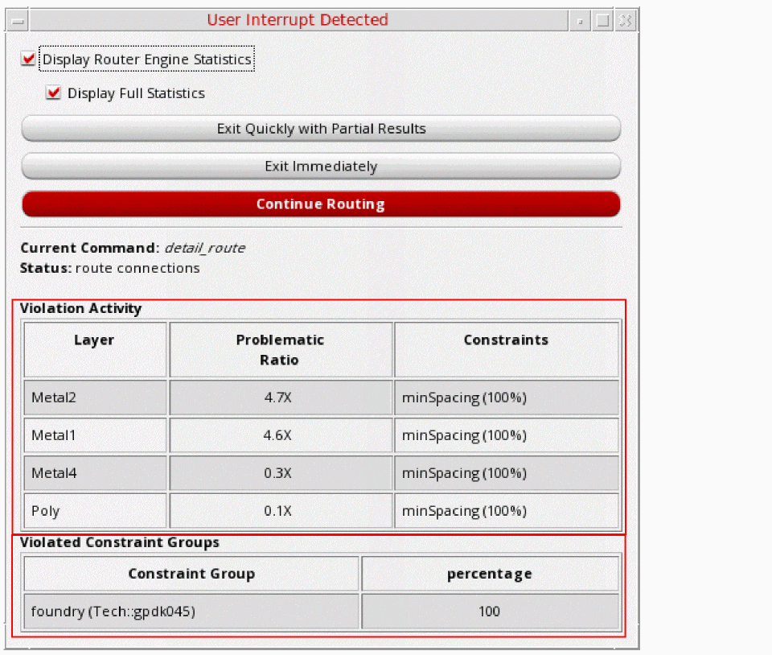

6
Routing Your Design
This chapter describes the various routing options made available by Virtuoso Space-based Router.
It includes the following sections:
- Using the Virtuoso Space-based Router Options Form
- Support for Multiple Forms
- Inserting Colored TrimMetal Layers in Automatic Routing
- Interrupting Routing for Unresolvable Errors
Using the Virtuoso Space-based Router Options Form
Choose Route – Design Setup or click the Design Setup icon on the Virtuoso Space-based Router toolbar.
The Virtuoso Space-based Router Options form is displayed, as shown in the following figure.
The Virtuoso Space-based Router Options form is divided into two panes, the left pane and the right pane. The left pane contains a hierarchically arranged collection of routing commands. When you select a command in the left pane, all options for that command are displayed in the right pane. The Defaults button can be used to reset the options that are currently displayed in the right pane of the Virtuoso Space-based Router Options form to their default values.
Using the Virtuoso Space-based Router Options form, you can specify the following top-level routing features:
Specifying Design Setup Options
Click the Design Setup icon on the toolbar or choose Route – Design Setup to display the Design Setup subform in the Virtuoso Space-based Router Options form, as shown in the following figure.
Using the Design Setup subform, you can specify the following options:
Extraction
Opening Virtuoso does not extract your design by default. You must set extractor depth (Options – Layout XL) and extract your design (Connectivity – Extract Layout).
The extraction options in the Virtuoso Space-based Router Options form lets you control the instances that are extracted using router specific extraction. The router specific extraction does not modify the OpenAccess database in any way. It modifies an internal data model used by the router. Therefore, it is recommended that your OpenAccess data follow the Virtuoso XL connectivity data model. If you are XL compliant then there is no need to run the router specific extraction, running the XL extractor is sufficient enough. However, there are some complex cases, such as Pcells that get automatically created when the Virtuoso XL extractor cannot fix non-compliant data. If the Pcells do not automatically create Virtuoso XL compliant data then you need to run the router-specific extraction on at least the Pcells (the default action). If you have Pcells in the lower levels of design hierarchy (for example, some Chip Assembly designs) you may want router-specific extraction on non-Pcells instances by selecting the All option.
-
Extract Connectivity through Poly
Extracts shapes on the poly layer. This option is selected by default. -
Extract
Lets you extract all cells, only pcells, or disable the extraction altogether. By default, Pcells are extracted.
Two other options are available, none and all.-
None
The none option bypasses the extraction process. -
All
The all option runs the extraction process on all instance masters. The all option can be used for designs that have Pcells nested two or more levels down in the hierarchy because the space-based router extraction does not extract Pcell masters during hierarchical extraction.
-
None
-
Extracted Pin Style
Lets you control which shapes should be converted into a pin shape. The shapes that are labeled or connected are extracted as pin shapes.-
Labeled Shapes Only
Allows only the shapes that are marked by text or property to become pin shapes. This option is selected by default. -
Connected Shapes On Same Layer
Allows only the marked shapes and the shapes that are recursively connected to become pin shapes. -
Whole Net on Routing Layers
Allows all the shapes in the net to become pin shapes.
-
Labeled Shapes Only
Design Style
The design style determines which steps in the Wire Assistant flow will run and also affects the heuristics of global and detail routes. Therefore, the value of design style needs to reflect the style of design you are routing. By default, the design style that was last specified is selected in the drop-down list.
If the design style is set to a value other than Automatic in the Design Style drop-down list then the specified value is used to route the layout. For example, if the design style is Chip Assembly, then the router uses the Chip Assembly style to route the layout. If the design style is now selected as ASIC, then the router uses the ASIC style to route the layout.
The following four design styles are available:
-
Automatic
The design style is automatically determined based on the size of the layout and the composition of macro instances. This evaluation happens when the design is first processed by the routing commands. The design style is retained until explicitly re-evaluated using the Refresh button to the right of the design style field. -
Device
This design style is used when you need to route device-level for custom block creation and smaller designs that do not require congestion planning. -
ASIC
This design style is used when you need to inter block routing for custom and digital blocks, standard cell, and ASIC designs that require congestion planning. -
Chip Assembly
This design style is used when you need to route chip assembly with block abstracts and larger designs that contain large macros and require congestion planning.
Blockage Treatment
These options let you alter the treatment of the blockages.
-
Default Blockage Model
Ensures that all blockages have proper spacing properties and that the blockages model the metal on the edge of the block properly.-
Automatic
Automatically determines the blockage mode to be used according to the design style. This is the default value. -
Real Metal
Blockages are treated as metal and the spacing rules are applied based on blockage dimensions. -
Minimum Width Space
Blockages are treated as metal with minimum width, regardless of the real width of the blockage.
Environment Variable: blockTreatmentTreatAs -
Automatic
User Scripts
An existing routing flow can be captured in the form of Tcl routing commands in a Tcl script. You can run the Tcl scripts to view routing results.
-
Pre Load
The specified pre-load script (vsrPreLoad.tcl) is used to set Catena environment variables, which alters the infrastructure setup for routing. For example, if you do not want the router to derive new vias from existing standard vias, in such a case, you can specify the environment variable db.enable_create_derived_vias to false in the vsrPreLoad.tcl script file.
In addition, you can set Catena environment variables related to WSP routing. For example, you can specify the db.allow_larger_tracks variable to true in the vsrPreLoad.tcl script file. Other commands like map_purpose can also be specified in the vsrPreLoad.tcl script file.
The script is run before the Catena engine is loaded. -
Pre Route and Post Route
The specified pre-route and post-route scripts are used at the appropriate time during automatic and assisted routing flow of the Wire Assistant. You can specify scripts by using the Routing Scripts form that is displayed when you choose Route – Routing Scripts. For more information, see Routing Scripts.
ThevsrFinal.ilfile is now supported by Virtuoso Space-based router. You can customize this file by adding your own SKILL commands. After routing, thevsrFinal.ilfile is loaded and the customized SKILL commands are run.
Specifying Routing Flow Options
Click Auto Route Styles. This displays the hyperlinks that let you quickly navigate to the available routing flows. The router supports three routing flows:
Custom / Digital (MST)
The Custom/ Digital (MST) routing style results in a connection with the shortest overall length. This routing style is usually used for congestion-driven designs. If there is no trunk, the Custom / Digital (MST) router routes the nets. However, if one or more trunks exist, the following steps are performed in the routing flow:
- Pin to Trunk router routes the nets with trunks according to the options specified in the Pin to Trunk subform. For more information about the Pin to Trunk options, see Using the Pin to Trunk Routing
-
Custom/ Digital (MST) router then routes the remaining opened pins on nets with trunks and also routes all the pins on nets without trunks.Only standard cells designed with the area-based rules that exists in the PDK technology file are supported for the Custom/ Digital (MST) routing flow. For example, if the PDK technology file only contains area-based rules for the minimum spacing of one area, but the standard cells are designed with area-based rules for another area that allow smaller spacing values, the standard cells have false violations and do not route appropriately. Therefore, only standard cells designed with the same rules that are in the PDK are supported.
In the Custom/ Digital (MST) routing flow, power, ground, and clock nets are not routed when the Route All option is selected. To route these nets, you need to select them in the Navigator Assistant and then select the Route Selected option.
On a 7nm ASIC design style, an extended segment can be added at one end of a pin to repair the minArea and minEndOfLineSpacing violations. Pin extensions are generated for all the nets regardless of the nets that are selected for routing.
The following figure shows a layout design using the Custom / Digital (MST) routing flow.
The following figure shows the options that are available for the Custom/ Digital (MST) routing flow.
-
Remove Pre-Route Dangles
When selected, the Auto Route command removes any remaining dangles connected to the “from” and “to” points of the selected nets in the current command. This check box is deselected by default. The following figure shows three dangles that existed before routing the nets. Two dangles appear on netinand one on netout.
All pre-routes are considered locked by Auto Route even if they are not explicitly locked and cannot be removed or modified. The Remove Pre-Route Dangles option allows you to remove leftover dangles that exist on a selected net and the net is modified as a result of auto routing. In the following figure, netinwas selected for routing. As a result, both the dangles on netinare removed. Since netoutwas not selected, the dangle on netoutremains unchanged.
The following figure shows when both the netsinandoutare selected for routing. As a result, dangles on both the nets are removed.
 -
Run With Low Effort
Allows the detail router to exit early if the average reduction ratios for opens and errors do not converge in consecutive passes. -
Prefer Violations to Opens
Allows the router to route nets even if a violation occurs while routing. The router will prefer to leave opens rather than creating violations. However, when the Prefer Violations to Opens option is selected, the router closes opens at the expense of leaving violations. The router still leaves opens for some violations such as shorts or for blocked pins.
The Prefer violations to opens option affects only automatic routing. It does not have any effect on interactive and assisted routing commands. To control whether violations are allowed in assisted and interactive routing commands, such as Finish Wire, Finish Bus, Finish Trunk, Point-to-Point, and Guided routing, select Enforce in the DRD Options form. -
Exclude Blocked Pins During Routing
When selected, the pins on the nets to be routed are checked for planar and via accessibility. If a pin is inaccessible, the router does not attempt to route to it, and a marker appears on the Routing tab of the Annotation Browser. This option is selected by default. -
Force Global Planning
Allows forcing of global routing while in Device design style
Environment variable: forceGlobalPlanning -
Global Route All Nets
Forces the global router to use all nets even when routing a selected set of nets.
Environment variable: globalAllNets -
Preserve Pre-Routes
Allows for not locking the pre-routes. This is useful for ECO routes.
Environment variable: lockPreRoutes -
Wrong Way Tax
Controls whether wrong-way routing is permitted.-
As Is
Uses the default setting initialized by the router. This setting can allow certain wrong-way routing if required. This is selected by default and maps to the tax value1. -
Allow
Permits wrong-way routing freely. This maps to the tax value0. -
None
Does not allow wrong-way routing. The wrong-way tax value is100. -
Custom
Lets you control the extent of wrong-way routing that you want to permit. You can select this option and specify a value in the Wrong Way Tax Value field. The default value is 1. You can increase this value to increase the restriction on wrong-way routing.
Environment variable: allLayersWrongWay -
As Is
-
Wrong Way Tax Value
Indicates the extent to which wrong-way routing can be created. This cyclic field is placed next to the Wrong Way Tax combo box. This field is editable only when Wrong Way Tax is set to Custom. You can specify a value between0to100:0being the level of maximum freedom, and100being the level of maximum restriction for creating wrong-way routing.
Environment variable: allLayersWrongWayCustomValue
Pin to Aligned Pin
The Pin to Aligned Pin routing style is used to connect only the aligned pins on the same layer of net. The pins that are not aligned are not routed. This routing style is usually used when devices are placed in rows to connect pins that are aligned. The following figure shows a layout design using the Pin to Aligned Pin routing style.
Similarly, the following figure displays the options that are available for the Pin to Aligned Pin routing flow.
- Remove Pre-Route Dangles
- Run With Low Effort
- Prefer Violations to Opens
- Exclude Blocked Pins During Routing
- Preserve Pre-Routes
- Wrong Way Tax
- Wrong Way Tax Value
For more information about Pin to Aligned Pin options, see Custom / Digital (MST).
Pin to Trunk
The Pin to Trunk routing style is used to connect an individual pin to a trunk. Only the connections that are within the scope of a trunk are routed. The remaining opens are completed by using the Custom / Digital (MST) routing style or manually. This routing style is usually used when a spine structure is required.
The following figure displays the options that are available for Pin to Trunk routing flow.
For more information about Pin to Trunk routing and its options, see Using the Pin to Trunk Routing.
Tree Route (ICADVM 18.1 Only)
The Tree Route flow lets you automatically route advanced node device-level designs with a minimum set of options.
The following figure displays the options that are available for the Tree Route flow.
For more information about Tree Route and its options, see Using the Tree Route Flow (ICADVM20.1 EXL Only).
Related Topics
Specifying Automatic Flow Options
Click Automatic. This displays the hyperlinks that let you quickly navigate to other automatic routing flow subforms. The following routing flows are available in the Automatic subform.
Routability Check
The Routability Check feature is used to debug the design and determine potential routing issues that can prevent the router from achieving optimal results.
Using the Routability Check options that are available in Routability Check subform, you can check the width, spacing, and accessibility of pins, and other issues that may affect routing.
To perform routability checks on a design, click Routability Check from the Automatic tree in Routing Preferences. The following routability check options are displayed in the Routability Check subform:
Scope
Lets you choose the nets in the design on which routability checks can be performed.
-
Exclude
You can exclude certain signal types from routability checks.
Environment variable: checkRoutabilityCreateExcludeSet-
Power and Ground
When selected, the router does not check during routing for the nets that are marked with signal type Power and Ground. This option is selected by default. -
Clock
When selected, the router does not check during routing for the nets that are marked with signal type Clock. This option is selected by default.
-
Power and Ground
-
Markers Limit per Type
You can limit the number of violations reported in the Annotation Browser by specifying the required number in the Markers Limit per Type field. The default is 1000.
Environment variable: checkRoutabilityMarkersLimit.
Pin Checks (including Floating Pins)
Lets you perform specific pin checks on the nets in the design. It also flags the pins without any connectivity information.
-
Accessibility
Checks if the pin is accessible through planar access (wire is on the same layer as the pin) or through via access from above or below. This option is selected by default. -
Spacing
Checks whether the pin shape satisfies minimum spacing constraints and the overrides set in the Wire Assistant. This option is selected by default. -
Width
Checks whether the pin dimensions are less than the minimum pin width and satisfy the minimum width constraints and the overrides set in the Wire Assistant. This option is selected by default. -
In Preferred Direction
Checks whether the pins are in the preferred routing direction specified for the pin layer. It identifies the pins that can cause the router to use wrong-way metal. This option is deselected by default. -
Outside prBoundary
Checks for the pins that are outside the instance’s place and route boundary. This option is selected by default. -
Not On prBoundary Edge
Checks for pins that are not on the edge of the place and route boundary. This option is deselected by default.
Environment Variable: checkRoutabilityNotOnPRBoundaryEdge -
On Grid
Checks whether the pin edge is on the grid or on the center of the grid. The grid is determined by the Snap Wires to field in the Wire Assistant and the Wires field in the Snapping group box of the Layout Editor Options form. If Track Pattern is selected from the Snap Wires to field in the Wire Assistant, then the On Grid checks determines if all instance pins, IO pins, and trunks have tracks running through their center.The Snap Wires to field in the Wire Assistant and the Wires field in the Snapping group box of the Layout Editor Options form are synchronized.You can select one of the following options from the On Grid drop-down list:
Other Checks
You can also perform the following additional checks before you route a design.
-
Missing prBoundary
Checks for instances with missing place and route boundary. This option is selected by default.
Environment variable: checkRoutabilityMissingPRBoundary -
Missing Cover Obstruction
Checks for instances with missing blockage objects and cover obstructions. This option is deselected by default.
Environment variable: checkRoutabilityMissingCoverObstruction
The same routability checks are also available in the Batch Checker form. This allows you to run routability checks along with various other checks. To open the Batch Checker form, choose Verify – Design.
Congestion Analysis
Click Congestion Analysis from the Automatic tree under Routing Preferences. The following congestion analysis options are displayed in the Congestion Analysis subform.
-
Number Tracks per Cell
Overrides the number of tracks per gcell. This is suitable for a large design where routing is slow. Increasing the number of tracks passing through a gcell reduces the overall number of gcells in a design and therefore requires less resources to run global routing and congestion analysis. -
Number Threads
Enables multiple threading of global routing and congestion analysis. By default, global routing and congestion analysis are run single threaded. -
Enable Pin Optimization
Enables pin optimization for all soft blocks and opaque virtual hierarchies that are in the design. It also initiates the capabilities in the Virtuoso Design Planning assistant. -
Allow One Connection
Controls the number of routing connections per side for congestion analysis with pin optimization.
This option is enabled only when Enable Pin Optimization is selected. When Enable Pin Optimization is deselected, the Allow One Connection option is disabled and retains its previous value.-
per side
Enables one connection per side of each virtual hierarchy and soft block. -
per virtual hierarchy or soft block
Enables one connection for each virtual hierarchy or soft block.The Allow One Connection option is also added in the Design Planner Options form. The settings in the Congestion Analysis sub form and in the Design Planner Options form are synchronized. When the option setting is changed in one form, it is automatically updated in the other form. Similarly, when the pinOptOneConnectionPerSide environment variable is set, both the forms are updated.
-
per side
-
Analyze Mode
Specfies the analysis mode. The recommended analyze mode is the Maximum Congestion mode. For more information, see Filtering by Analysis Modes. -
Show Unusable Global Cells by
When selected, enables the display of the global cells that are blocked and are essentially not available for any global paths or interactive routing. -
Histogram Ranges
The values in this field are updated when the histogram customization is enabled. -
Hilite Global Net Path Width Percentage
Enables you to change the width of the highlighted global path to be a percentage of the width of a gcell. It can widen or narrow down the displayed global path on the heat map. -
Hide Analyzed Data in Filter
Hides gcells from the heat map that are not part of the histogram filter. This improves the visibility and makes it easier to visualize what has been filtered. In addition, when you select a congestion percentage bucket from the histogram, it automatically dims the congestion information of the gcells that are not in the selected bucket. -
Analyzed Brightness
Controls the brightness in the heat map when filtering has not been applied. -
Dim Analyzed Brightness
Controls the brightness of deselected gcells and deselected net global paths in the heat map. -
Filter Brightness
Controls the brightness of the heat map when filtering is applied. -
Dim Filter Brightness
Controls the brightness of deselected gcells and deselected net global paths in the heat map when filtering is applied. -
Selected Brightness
Controls the brightness of selected gcells and net global paths in the heat map.
Optimization
Click Optimize from the Automatic tree under Routing Preferences. To optimize routing in the design, select any of the options from the subform.
Wires
-
Reduce Jogs through Vias
Attempts to reduce wire jogs, considering connection between multiple layers through vias. -
Reduce Jogs within Single Layer
Attempts to reduce wire jogs for single layer wires. -
Remove Pre-Route Dangles
Removes all segments with one or both dangling ends. -
Adjust Pin Cover
Removes any small metal notches located near pins by shifting the wires slightly.
Vias
-
Align Via to Wire Edge
Moves vias so that the edge of the metal layers in the vias overlap or align with the edges of the wires. This can reduce the number of small notches around vias. This function is applicable only to vias that exist over route segments. -
Maximize Cuts
Maximizes the number of via cuts for wide layer intersections to fit multiple cuts. -
Use Double Cuts
Tries to replace single-cut vias with double-cut vias wherever it can, without creating a violation.
Fix Violations
Using the Fix Violations flow, you can perform all spacing-related checks including merged shapes and fix the violation operations, for all nets, selected nets, or a selected area.
Click Fix Violations from the Automatic tree under Routing Preferences. You can choose to fix any of the routing violations.
-
Minimum Spacing
Attempts to fix the opens that were caused by spacing violations. -
Minimum Edge
Uses the setting of the fixErrorsErrorTypesMinEdge environment variable to fix minimum edge violations. -
Minimum Area
The minimum area allowed for a shape on a specific layer. It uses the setting of the fixErrorsErrorTypesMinArea environment variable to fix minimum area violations. -
Minimum Enclosed Area
The minimum area allowed for a hole in the specified layer. It uses the setting of the fixErrorsErrorTypesMinEnclArea environment variable to fix minimum enclosed area violations. -
Minimum Width
The minimum width for any shape on the layer. It uses the setting of the fixErrorsErrorTypesMinWidth environment variable to fix minimum width violation. -
Minimum Number of Cuts
Uses the setting of the fixErrorsErrorTypesNumCut environment variable to fix minimum number of cuts violation. -
Extension
Attempts to fix all extension violations based on the extension constraints defined in the design, such asminOppExtensionandminExtensionEdgeconstraints. -
Routing Grid
Uses the setting of the fixErrorsErrorTypesRGrid environment variable to fix routing grid violation. -
(IACDVM 18.1 Only) Same Mask Spacing
Attempts to resolve same-mask spacing errors involving a double-cut via or a bar via by replacing it with a single-cut via. Even if you specifyminNumCutas greater than 1 in the Wire Assistant, single-cut vias are used to resolve same-mask spacing errors, provided thatminNumCutconstraint in the technology file is not violated.A pin is checked for same-mask spacing errors only when the pin is connected to an extra same-layer metal.Environment variable: fixErrorsErrorTypesSameMaskSpacing
Tie Shield
The Tie Shield command is used for tying the shielding wires together and to bring the connected shielding wires to the nearest power source, which can be part of a power pin, power ring, or trunk. The Tie Shield command is not used for routing the entire shielding net. It is recommended that before tying the shielding wires together to the routed power net, power routing is performed.
-
Gap Space for Vias
Ignores the gap spacing required between vias on shield wires and the wires being shielded. The minimum spacing for the layer must still be met. By default, the Gap Space for Vias option is deselected. -
Use Shield Width
Uses the shield width as the width for the tie off connections. -
Connect Shield Only
Connects only same-net shields. When shields are added, they are tied to the shield net. -
Add Redundant Vias
Adds redundant vias to tie shield wires to shield nets at every location where the shield wires overlap their respective existing power or ground rails. -
Add Layer Redundant Ties
Adds redundant vias to tie shield wires to shield nets at only those locations where the shield wires overlap their respective existing power or ground rails on adjacent layers. For example, redundant vias are added to tieMetal2shield wires to respectiveMetal3power or ground rails, but not toMetal6power or ground rails. -
Floating Shields
Preserves the floating shielding wire shapes when they cannot be tied. -
Tie Frequency
Specifies the maximum distance between ties that must be inserted to tie the new shield wires to their respective shield nets. -
Minimum Number Cut
Controls the number of via cuts in the tie shield operation.
Deleting Routing
Delete Routing is an interactive command where you explicitly ask for the routing to be deleted. Clicking Delete Routing from the Automatic tree under Routing Preferences option deletes all the routing in FIXED constraints. However, the routes in the LOCKED constraint are not deleted.
Click Delete Routing from the Automatic tree under Routing Preferences. The Delete Routing subform displays the options to be considered when deleting routing from the design.
You can select any of the following Delete Routing options:
-
Keep Power Nets
Lets you retain the power nets. By default, this option is deselected. -
Keep Geometric Shapes
To delete the geometric shapes, deselect the Keep Geometric Shapes option. The Keep Geometric Shapes option is selected by default. -
Keep Trunk Shapes
To delete the shapes that are marked as trunks, deselect the Keep Trunk Shapes option. The Keep Trunk Shapes option is selected by default. -
Keep Fig Group Shapes
To delete the routing within fig groups while at the top-level, deselect the Keep Fig Group Shapes option. The Keep Fig Group Shapes option is selected by default. -
Keep Manual Routes
To keep the manual routes that are created by interactive and assisted routing and delete only the routes created by automatic routing, select the Keep Manual Routes option. The Keep Manual Routes option is deselected by default. In this case, all routes created by interactive, assisted, and automatic routing are deleted.
Deleting Partial Routing
When certain instances or devices are changed in the schematic, you can delete only the routes that are connected to those devices, while ensuring that trunks and any fixed preroutes on that net are preserved, swapped, and rerouted. To do this:
- Select an instance in the Navigator assistant or layout canvas.
-
Right-click the selected instance. The Instance shortcut menu appears.
 -
Choose Delete Associated Routing in the shortcut menu.
The routing on the selected instance is deleted. The trunk and fixed preroutes are preserved.

Support for Multiple Forms
The Virtuoso Space-based Router Options form allows you to display multiple subforms in a single pane. To display multiple subforms, select any option from the Routing Preferences tree in the left pane, and then hold down the Ctrl key and select other options from the left pane. All subforms corresponding to the options that you selected in the left pane are listed in the right pane in the order in which they are listed in the left pane, as shown below.
A vertical scroll bar is automatically added to the right pane if the pane cannot accommodate all the forms. To remove the subform from the right pane, hold down the Ctrl key and deselect the required option from the left pane. You can use the Defaults button to reset all options in the subforms displayed in the right pane to their default values.
Inserting Colored TrimMetal Layers in Automatic Routing
Advanced node processes (SADP) with trim shapes might not have DRC clean instance pins (minArea) and post placement violations between other instance pins (minEndOfLineSpacing). This causes problems for automatic routing to access pins because of the violations generated during routing (pin are required to be DRC clean before routing).
To resolve this problem, automatic routing inserts wires (pathSegments) to fix minArea violation and trim shapes to fix minEndOfLineSpacing violation, while routing pins with connectivity. Automatic routing supports automatic insertion of trim shapes when the trimShape and trimMinSpacing constraints are defined in the technology file. In such cases, the trimShape and trimMinSpacing constraints are honored and the trim shapes are inserted.
The automatic routing provides two methods of adding a trim shape.
-
Static fixing of instance pin violations that are due to the
minEndOfLineSpacingconstraints. In this case, trim, bridge, and patch shapes are added to preventminEndOfLineSpacingviolations. This is only possible for pins with connectivity. However, if the checker is run, there may still be violations after fixing the staticminEndOfLineSpacingfixing. For orthogonal grid alignment, theorthogonalWSPGridconstraint is supported.
 -
During routing, when two wires are too close to each other, their end of line spacing creates a
minEndOfLineSpacingviolation. In this case, the router modifies the pathSeg and extends it (custom extent) until it comes into contact with trim and bridge shapes. A patch shape is not added.

In automatic routing, the width of the bridge is determined by the exactEolWidth parameter of the minEndOfLineSpacing constraint and not by the width of the pin.
minEndOfLineSpacing violation between each other because that is considered as a valid violation when routing is performed.
You can also assign color to a trim layer and specify that a trim layer with a given color should cut a routing layer with that color. As a result, trim shapes are automatically assigned the correct color when they are added during automatic routing. For more information, see
Interrupting Routing for Unresolvable Errors
While routing a design, there are some errors that can occur due to data or technology setup issues, which could not be recognized by the routability checker. If the router is taking too long to complete, you can stop the current run using Ctrl + C and investigate what the issues might be.
To prevent the router from running further, do the following
- Select nets from the Navigator assistant.
- From the Wire Assistant, select the Auto Route command.
-
Click the All or the Selected button next to Route Net.
The routing for the nets selected in the Navigator assistant starts.
Alternatively, choose Route – Automatic Routing.
Select the All Nets or Selected Nets option from the Automatic Routing sub menu. -
To interrupt routing, press
Ctrl + C.
The User Interrupt Detected form is displayed.
 - Select the Display Router Engine Statistics check box to collect and display statistics from the routing engine.
- Select the Display Full Statistics check box to display all the violation statistics. By default, the Display Full Statistics check box is disabled and only the most relevant statistics are displayed. The Display Full Statistics check box is enabled only when the Display Router Engine Statistics check box is selected.
-
In the form, click an option to discontinue the router from running. You can select one of the following options.
-
Exit Quickly with Partial Results
Completes the current routing step as quickly as possible. The results are saved and routing exits without any further routing steps. You can view and edit the routing results that are saved. By viewing the routing results, you are able to identify the types of issues that are encountered by the router at the time of interruption. -
Exit Immediately
Exits the current routing immediately without saving any routing results. The design is unmodified and left in its pre-routing state. -
Continue Routing
Cancels the user interrupt and continues routing.
The Current Command section provides information about the command that was running at the time of interruption. -
Exit Quickly with Partial Results
- To view the router statistics, again click the Continue Routing button.
-
Again, press
Ctrl + C.
The following figure shows the routing engine statistics that get displayed in a tabular format.
Subsequently, clicking the Continue Routing button and then pressingCtrl + Cprovides the routing statistics that have been completed between the two actions.
The Violation Activity table shows the router statistics, if they exist. The following table provides the description of various columns in the Violation Activity table.
The Violation Constraint table shows the foundry constraint group rule violations. The following table provides the description of various columns in the Violation Constraint table.Excludes foundry CG for incomplete statistics and includes foundry violations if Display Full Statistics is selected.
Shows the percentage of violations based on the constraint group it is in.
Return to top